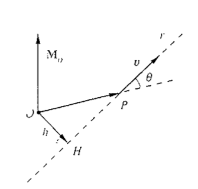

Grandezze scalari e vettoriali
- Le grandezze per la cui rappresentazione basta un solo numero, costante o funzione delle coordinate ed eventualmente anche del tempo, si dicono grandezze scalari: le operazioni che si eseguono su di esse obbediscono alle solite regole dell'algebra.
- Esistono grandezze che per essere specificate hanno bisogno di un numero, il modulo, che ne dà il valore assoluto, di una direzione e di un verso. Il vettore è l'ente matematico adatto alla rappresentazione di queste grandezze che si chiamano appunto vettoriali e per le quali vale un'algebra che non è identica all'algebra vettoriale.
Operazioni sui vettori
- Prodotto di un vettore per uno scalare
- Somma di vettori
- Prodotto tra vettori:
- Prodotto scalare
- Prodotto vetttoriale
Prodotto scalare
- Dati due vettori \(\vec{a}\) e \(\vec{b}\), si definisce prodotto scalare la quantità \[s = \vec{a} \cdot \vec{b} = a * b * \cos{\theta}\] indicando con \(\theta\) l'angolo formato dai due vettori.
- Il prodotto scalare gode della seguente proprietà:
- è nullo non solo se uno dei due vettori è nullo, ma anche se i due vettori formono un angolo di \(90^o\)
Prodotto vettoriale
- Dati due vettori \( \vec{a}\) e \(\vec{b}\) si definisce prodotto vettoriale il vettore \(\vec{c}\) che si indica con il simbolo: \[ \vec{c} = \vec{a} \times \vec{b} \] e che ha le seguenti caratteristiche:
- la direzione di \(\vec{c}\) è perpendicolare al piano individuato da \( \vec{a}\) e \(\vec{b}\)
- il verso è quello di una normale vite destrogira, cioè ruotando da \( \vec{a}\) a \(\vec{b}\) nel verso della vite, il verso di \(\vec{c}\) è indicato dalla punta della vite.
- il modulo è \(c = a * b * \sin(\theta)\)

Momento di un vettore rispetto ad un punto

- Sia \(\vec{v}\) un vettore applicato nel punto P e O un altro generico punto. Si definisce momento del vettore \(\vec{v}\) rispetto al punto O, chiamato polo, il vettore \[ \vec{M_o} = \vec{OP} \times \vec{v} \] ortogonale al piano individuato da \(\vec{OP}\) e \(\vec{v}\)
Operatore differenziale
- Derivata. Una notazione comune è: \[ \frac{d}{dx} \text{ o } D_x \text{ o } D \]
- Per le derivate successive si usa rispettivamente: \[ \frac{d^n}{dx^n} \text{ o } D_x^n \text{ o } D^n \]
- Il gradiente di una funzione scalare f(x,y,z) è una funzione vettoriale: \[ \vec{\nabla} f = \frac{\partial f}{\partial x} \vec{i} + \frac{\partial f}{\partial y} \vec{j} + \frac{\partial f}{\partial z} \vec{k} \]
Definizione di differenziale
- Il differenziale di una funzione, in un punto in cui la funzione è derivabile, è il prodotto della derivata in quel punto per l'incremento della variabile indipendente
- Esempio: \[ y = x^2 + sen(x) \Rightarrow dy = (2x+ cos(x))dx \]
Formula di Eulero
- La formula di Eulero afferma che, per ogni numero reale x si ha: \[ e^{ix} = cos x + i sen x \] dove e è la base dei logaritmi naturali, i è l'unità immaginaria e seno e coseno sono funzioni trigonometriche.
Formule Trigonometriche
- Formule di prostaferesi: \[ sin(\alpha) + sin(\beta) = 2 sin(\frac{\alpha + \beta}{2}) cos(\frac{\alpha - \beta}{2}) \]
- Formule della somma degli angoli: \[ sin(\alpha + \beta) = sin(\alpha) cos(\beta) + cos(\alpha) sin(\beta) \]